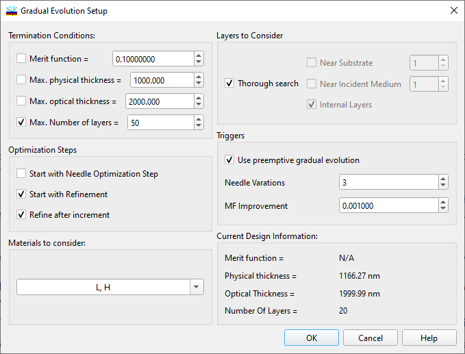

Gradual Evolution
Gradual Evolution
Navigation: OptiLayer Menu Commands > Synthesis Menu >
Gradual Evolution
` <idh_needle_optimization_dialog.html>`__ ` <idh_menu_synthesis.html>`__ ` <wdm_filter_design___material_s.html>`__

The Gradual Evolution command is a powerful synthesis tool in situations where the total thickness of the current design is insufficient to achieve the desired value of the merit function or in situations where the user wants the program to synthesize a design from a very simple starting design or even without any starting design. The Gradual Evolution Setup window allows the user to specify termination criteria such as the value of the merit function, the maximum physical or optical thickness, or the maximum number of layers in the final design. In the Gradual Evolution process, an additional thick layer is automatically inserted into the design when the needle optimization is complete and termination criteria are not yet met. The insertion can occur near the substrate, the incident medium, or within the design. Materials with Inactive Status can be excluded from the Gradual Evolution procedure, controlled in the Modifications group of the Gradual Evolution Setup window. The material and thickness of the additional layer are chosen automatically from the specified materials in the Materials to Consider box. It is important to note that after the insertion of a new layer, the merit function value typically increases. The option “Start with Needle Optimization step” modifies the start of the Gradual Evolution procedure. When active, the Gradual Evolution step is performed only after the initial Needle Optimization procedure is completed, which is useful for restarting terminated computational gradual evolution processes. The “Preemptive Gradual Evolution” option helps prevent the insertion of many thin layers with minimal improvement during the Gradual Evolution procedure. It triggers a new Gradual Evolution step instead of adding insignificant layers when consecutive Needle variations provide negligible merit function improvement. The example illustrates that the gradual evolution step will be initiated when three Needle variations yield a relative merit function improvement less than 0.001.
It is worth noting that a starting design is not essential for running Gradual Evolution. Loading Target data, Substrate, and at least two Layer Materials with Active or Exclusionary status is required (see Selecting Materials).